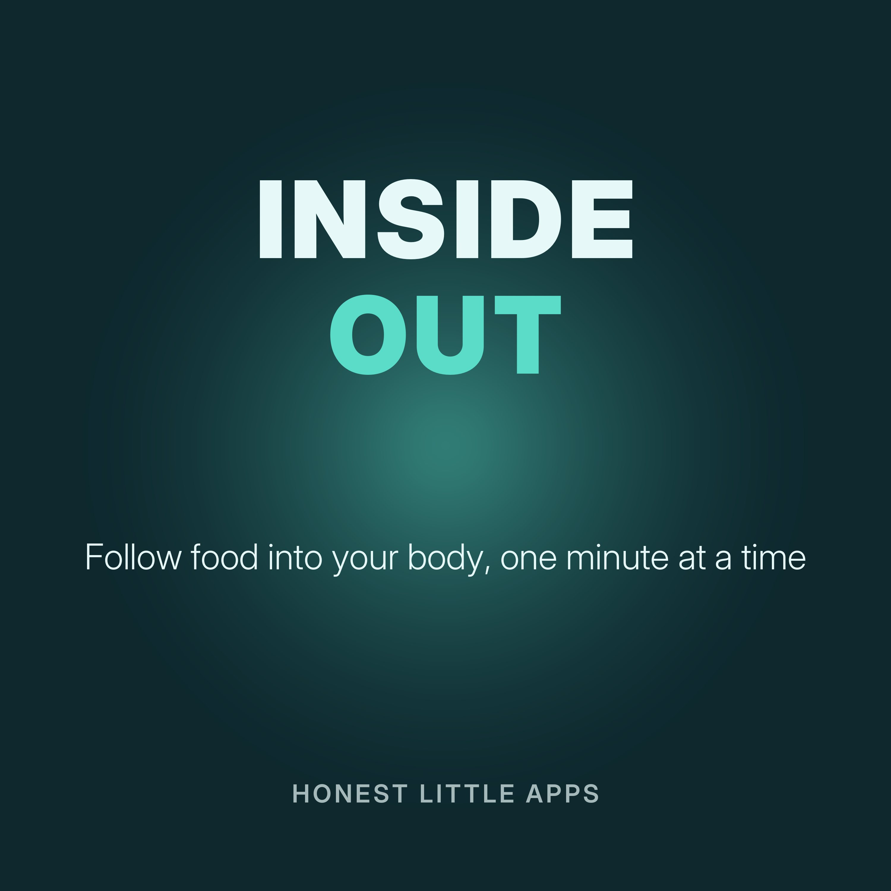

Inside Out: One Body Fact a Day
One-minute episodes about how the human body works, starting with what happens to food after you swallow it. Plain-language science for curious learners, students and teachers. Educational, not medical advice.
Made by Honest Little Apps, the makers of Body Unpacked: Health Atlas, an iPhone app that lets you follow a food into your body and explore how it works. Narrated with a synthetic (text-to-speech) voice.
- Digestion starts in your mouthDigestion begins before you swallow.
- The journey down the oesophagusWhen you swallow, food travels down a muscular tube called the oesophagus.
- The stomachYour stomach mixes food with acid and enzymes, churning it into a thick liquid.
- The small intestineMost nutrients are absorbed in the small intestine.
- The large intestineThe large intestine absorbs much of the remaining water.